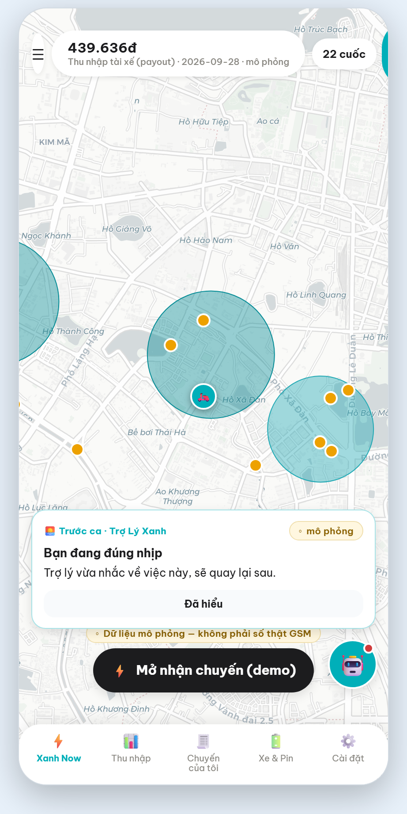
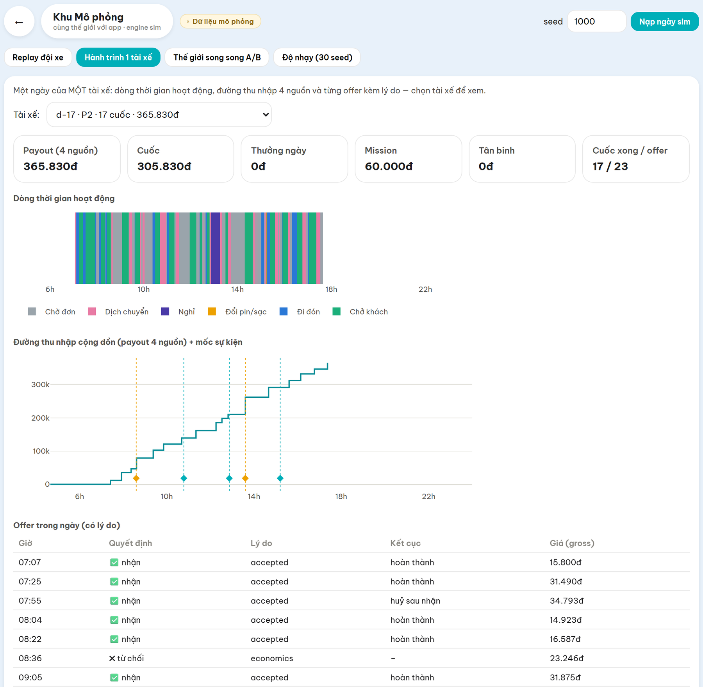
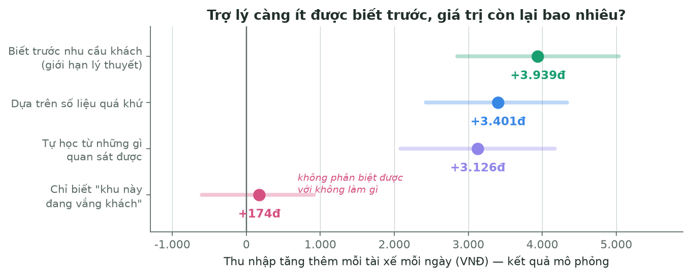
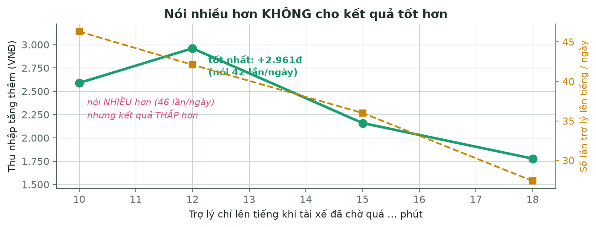
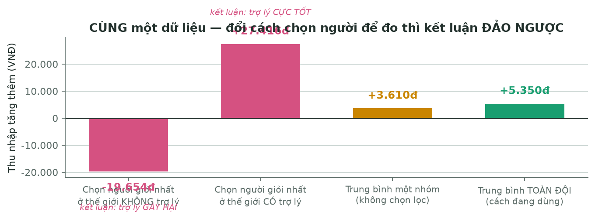

Một trợ lý cho tài xế Xanh SM. Tài xế chạy cả ngày và liên tục phải tự trả lời những câu rất thực tế: giờ này nên đứng chờ ở đây hay chuyển sang khu khác? Còn kịp mốc thưởng hôm nay không? Đi đổi pin lúc nào thì ít mất cuốc nhất? Hiện tại mỗi người tự đoán một kiểu.
Sản phẩm không lái thay tài xế và không can thiệp vào việc GSM chia cuốc — nó chạy trên nền hệ thống điều phối của GSM. Việc nó làm là: tính giúp, giải thích, rồi để tài xế tự quyết. Con số do phần tính toán làm ra; phần AI chỉ diễn giải cho dễ hiểu. Nhờ tách vai như vậy, trợ lý không thể tự nói vống một con số — đó là ràng buộc quan trọng nhất khi sản phẩm nói về thu nhập của người khác.
Ba mục tiêu tuần 2: làm cho sản phẩm chạy được để xem tận mắt · dựng môi trường mô phỏng để đo xem lời khuyên có thật giúp được không · trả lời câu hỏi khó nhất: trợ lý còn hữu ích không khi nó không được biết trước nhu cầu khách?
|
|
| Xem lại một ngày chạy — thu nhập cộng dồn theo từng cuốc, kèm các mốc trợ lý đã lên tiếng | Cuốc trên đường thật — tuyến lấy từ bản đồ thật, có chặng ghé trạm sạc |
Trợ lý tự lên tiếng đúng lúc, không bắt tài xế đi tìm:

Thẻ tự hiện trước ca: "Còn với được mốc thưởng 30.000đ hôm nay — bạn thiếu 55 điểm, khoảng 9,5 giờ chạy nữa, 11 cuốc. Quỹ giờ còn lại đủ." Ba điểm thiết kế có chủ ý:
Nếu không có gì đáng nói, trợ lý im lặng. Một trợ lý nói ít mà đúng thì đáng tin hơn một trợ lý nói suốt ngày.
 |
 |
| Tài xế hỏi lại bằng tiếng nói thường ngày: "Mốc thưởng hôm nay của tôi thế nào?" | Màn theo dõi thu nhập trong ngày |
Về tính năng: trợ lý có 5 kênh gợi ý, nhưng hiện chỉ 1 kênh được bật. Bốn kênh còn lại bị tắt vì đo ra không hiệu quả hoặc có hại — trong đó có kênh lập lịch ca, ban đầu bọn em tưởng sẽ là tính năng chính. Nhóm coi việc tắt chúng là kết quả dương của việc chịu đo.
Đây là phần đầu tư nhiều nhất trong tuần, vì không đo được thì mọi tính năng chỉ là phỏng đoán. Cách làm: dựng hai thế giới mô phỏng giống nhau từng chi tiết — cùng ngày, cùng khách, cùng thời tiết, cùng tài xế — khác duy nhất một điều: một bên có trợ lý. Chênh lệch chính là giá trị (hoặc sự vô ích) của lời khuyên.
 |
 |
| 90 tài xế trong một ngày mô phỏng — xem được từng người đang chở khách, đi đón, đổi pin hay đang chờ | So hai thế giới cùng một ngày. Màn này tự nhắc: một ngày lẻ chưa phải kết luận, cần ít nhất 30 ngày |
 |
 |
| Xem kỹ hành trình một tài xế: chờ ở đâu, đi đón bao xa, nghỉ lúc nào | Bảng theo dõi nội bộ để soi từng mặt: bản đồ, nhịp ngày, môi trường, đội xe |
Mô phỏng cũng là nơi trả lời câu mà thử nghiệm nhỏ không trả lời được: nếu nhiều tài xế cùng làm theo một gợi ý thì trạm pin và khu vực có chịu được không?
Câu hỏi khó nhất: ngoài đời trợ lý sẽ không bao giờ biết trước khách gọi ở đâu — nó phải tự học từ những gì quan sát được. Vậy nó còn hữu ích không?

| Trợ lý biết gì | Thu nhập tăng thêm / tài xế / ngày |
|---|---|
| Biết trước nhu cầu khách (giới hạn lý thuyết) | +3.939đ |
| Dựa trên số liệu quá khứ | +3.401đ |
| Tự học từ những gì quan sát được — sát thực tế nhất | +3.126đ |
| Chỉ dựa vào tín hiệu thô "khu này đang vắng khách" | +174đ — không phân biệt được với không làm gì |
Nghĩa là: trợ lý giữ được phần lớn giá trị khi phải tự học thay vì được cho biết trước. Nhưng một tín hiệu quá thô thì vô dụng — chi tiết này quan trọng, vì nó nói rằng phải đầu tư vào chất lượng dự báo, không phải chỉ thêm luật.

Một kết quả nữa: khi cho trợ lý nói nhiều hơn, kết quả lại kém hơn — nói 42 lần/ngày tốt hơn nói 46 lần. Giá trị không đến từ nói nhiều, mà từ chọn đúng lúc để nói.
Cả đội cùng có lợi, không phải giành nhau. Chênh lệch thu nhập giữa các tài xế giảm; không nhóm tài xế nào bị thiệt; và tỷ lệ khách được phục vụ tăng dần theo số người dùng (10% → 25% → 50% → 100% cho mức tăng 0,6 → 1,0 → 1,1 → 1,7 điểm phần trăm). Càng nhiều người dùng thì hệ thống càng tốt lên.
Trợ lý không đánh đổi sức khoẻ lấy tiền. Đo được: tài xế nghỉ nhiều hơn và thời gian làm việc liên tục giảm, trong khi thu nhập vẫn tăng. Đây là ràng buộc bọn em đặt ngay từ đầu và kiểm bằng cơ chế, không phải bằng lời hứa.
Lưu ý: toàn bộ số trên là kết quả mô phỏng trên dữ liệu giả lập, không phải hiệu quả đã kiểm chứng với tài xế thật. Bọn em cố ý không nói mạnh hơn thế.

Hình trên là cùng một dữ liệu, cùng một tính năng — chỉ khác cách chọn tài xế để đo. Kết quả chạy từ −19.654đ (kết luận: trợ lý gây hại) tới +27.416đ (kết luận: trợ lý cực tốt).
Nếu tuần này bọn em không phát hiện ra, rất có thể đã báo cáo một con số đẹp mà sai. Bài học: chọn sai cách đo không làm con số lệch một chút — nó đảo ngược cả kết luận. Từ đó nhóm chuyển sang đo trên toàn đội thay vì chọn người tiêu biểu.
Một chuyện tương tự xảy ra ngay cuối tuần: sau khi đã có kết quả, nhóm phát hiện thước đo dùng để kết luận bị sai, phải sửa và đo lại toàn bộ. Con số cuối thấp hơn con số ban đầu, và một con số cũ thì không tái lập được nữa. Nhóm chọn báo con số thấp hơn, vì nó đúng.

Đi kèm là kỷ luật kiểm thử: 1.000 bài kiểm tra tự động chạy đúng, tăng từ 850 đầu tuần. Mỗi thay đổi có ý nghĩa đều phải ghi lại đã kiểm chứng gì và — quan trọng hơn — cái gì chưa kiểm chứng. Hiện có 69 mục nợ kỹ thuật còn mở, mỗi mục có mã và điều kiện mở lại; bọn em trình bày đây là kỷ luật chứ không phải điểm yếu, vì một vấn đề có mã thì không biến mất trong im lặng.
Bản kỹ thuật chi tiết kèm theo: Week2-Bao-cao-ky-thuat-chi-tiet.pdf — đầy đủ phương pháp đo,
thiết kế mô phỏng (số lượng actor/trạng thái/hành động), luồng dữ liệu qua từng trường của schema,
cơ sở nghiên cứu chính sách, guardrails, lựa chọn kiến trúc và nguồn của từng con số.